| r_squared_from_other_predictors | vif |
|---|---|
| 0.00 | 1 |
| 0.50 | 2 |
| 0.80 | 5 |
| 0.90 | 10 |
| 0.95 | 20 |
| 0.99 | 100 |
14 Multicollinearity and Principal Component Regression
“The greatest value of a picture is when it forces us to notice what we never expected to see.” - John Tukey
14.1 Multicollinearity
Often, two or more of the independent variables used in the model for \(E(y)\) will contribute redundant information. That is, the independent variables will be correlated with each other.
For example, suppose we want to construct a model to predict the gasoline mileage rating, \(y\), of a truck as a function of its load, \(x_1\), and the horsepower, \(x_2\), of its engine.
In general, you would expect heavier loads to require greater horsepower and to result in lower mileage ratings.
Thus, although both \(x_1\) and \(x_2\) contribute information for the prediction of mileage rating, some of the information is overlapping, because \(x_1\) and \(x_2\) are correlated.
When the independent variables are correlated, we say that multicollinearity exists.
The ability to obtain a good fit or to make inferences on the mean response or to predict the response are not affected by multicollinearity. However, inferences for the coefficients (the \(\beta\)s) and for the model variance (\(\sigma^2\)) are affected by large correlation among the predictor variables.
NoteWhat multicollinearity does and does not do
Multicollinearity is mainly a problem for interpreting individual regression coefficients.
| Goal | Is multicollinearity a major problem? | Why? |
|---|---|---|
| Predicting new responses | Usually no | Correlated predictors can still combine to produce good predictions. |
| Estimating the mean response | Usually no | The fitted mean may still be estimated well in regions supported by the data. |
| Testing individual coefficients | Yes | Standard errors can become inflated, making individual predictors look nonsignificant. |
| Interpreting partial slopes | Yes | Holding one predictor fixed while changing another may be unrealistic when predictors move together. |
| Deciding which variable is “important” | Yes | Correlated predictors share information, so their unique contributions are hard to separate. |
The awkward part is that a model can predict well while still being difficult to interpret.
Another effect of multicollinearity is the interpretation of the estimated coefficients. In multiple regression, we interpret the coefficient as the average change in \(y\) when \(x\) is increased by one unit when all other predictor variables are held constant.
If \(x\) is highly correlated with one or more of the other predictor variables, then it may not be feasible to think of varying \(x\) when the others are constant.
14.1.1 Variance Inflation Factors
We can see evidence of multicollinearity by examining the scatterplot matrix since this will give us a plot of each pair of predictor variables. If there are pairs that appear to be highly correlated (ggpairs in R will give the correlation value as well) then multicollinearity will be present.
We could also examine \(R_{a}^{2}\) for models with and without certain pairs of variables. If \(R_{a}^{2}\) decreases when a particular \(x\) variable is added but it appears to have a strong linear relationship with \(y\) in the scatterplot matrix, then this is evidence of multicollinearity.
A more convenient way to examine multicollinearity is through the use of the variance inflation factors (VIF).
Each predictor variable will have a VIF. Suppose we are interested in the VIF for \(x_{1}\). We start by regressing \(x_{1}\) on all the other predictor variables. Thus, we fit the model \[ \begin{align*} x_{i1} & =\alpha_{0}+\alpha_{2}x_{i2}+\alpha_{3}x_{i3}+\cdots+\alpha_{p-1}x_{i,p-1}+\epsilon \end{align*} \] where the \(\alpha\)’s are the coefficients and \(\epsilon\) is the random error term.
Now find the coefficient of multiple determination for this model which we will denote as \(R_{1}^{2}\). The VIF for \(x_{1}\) is then \[ \begin{align*} VIF_{1} & =\frac{1}{1-R_{1}^{2}}. \end{align*} \] We can do this for any \(i\)th predictor variable so that the VIF for that variable is \[ \begin{align} VIF_{i} & =\frac{1}{1-R_{i}^{2}} \end{align} \tag{14.1}\] where \(R_{i}^{2}\) is the coefficient of multiple determination for the regression fit of \(x_{i}\) on all the other predictor variables.
A rule of thumb is that a VIF greater than 10 is evidence that multicollinearity is high when that variable is added to the model. Some use a cutoff of 5 instead of 10.
ExampleWorked example: Interpreting VIF values
The VIF for predictor \(x_i\) is
\[ VIF_i=\frac{1}{1-R_i^2}, \]
where \(R_i^2\) comes from regressing \(x_i\) on the other predictors. As \(R_i^2\) gets close to 1, the VIF grows quickly.
A VIF of 10 means the estimated variance of a coefficient is 10 times as large as it would be if that predictor were uncorrelated with the other predictors, all else equal. Since standard errors are square roots of variances, this corresponds to a standard error about \(\sqrt{10}\approx 3.16\) times as large.
Example 14.1
ExampleUN98 data and VIF diagnostics
The UN98 data will be used to illustrate VIF diagnostics.
One approach to seeing which variables are correlated with each other is to remove a variable with a large VIF and see which variables had the largest change in their VIF.
We will illustrate this process with the dataset from the library. We will not use the and variables for this example.
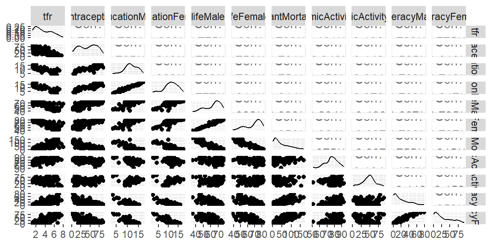
# Prepare data
dat_recipe <- recipe(
infantMortality ~ .,
data = UN98
) |>
step_rm(region, GDPperCapita)
# Set up model
lm_model <- linear_reg() |>
set_engine("lm")
# Set up the workflow
lm_workflow <- workflow() |>
add_recipe(dat_recipe) |>
add_model(lm_model)
# Fit the model
lm_fit <- lm_workflow |>
fit(data = UN98)
lm_fit |>
tidy() |>
knitr::kable(digits = 4)| term | estimate | std.error | statistic | p.value |
|---|---|---|---|---|
| (Intercept) | 111.0315 | 48.8599 | 2.2724 | 0.0309 |
| tfr | 12.0410 | 3.8663 | 3.1143 | 0.0042 |
| contraception | -0.0709 | 0.1372 | -0.5172 | 0.6091 |
| educationMale | 5.9823 | 3.1106 | 1.9232 | 0.0647 |
| educationFemale | -6.4092 | 2.7618 | -2.3207 | 0.0278 |
| lifeMale | -0.4054 | 1.1116 | -0.3647 | 0.7181 |
| lifeFemale | -0.7572 | 1.3175 | -0.5747 | 0.5701 |
| economicActivityMale | -0.3827 | 0.2635 | -1.4521 | 0.1576 |
| economicActivityFemale | 0.1722 | 0.1281 | 1.3444 | 0.1896 |
| illiteracyMale | -0.5444 | 0.3924 | -1.3875 | 0.1762 |
| illiteracyFemale | 0.3209 | 0.3130 | 1.0252 | 0.3140 |
lm_fit |>
glance() |>
knitr::kable(digits = 4)| r.squared | adj.r.squared | sigma | statistic | p.value | df | logLik | AIC | BIC | deviance | df.residual | nobs |
|---|---|---|---|---|---|---|---|---|---|---|---|
| 0.9444 | 0.9245 | 9.3962 | 47.5168 | 0 | 10 | -136.249 | 296.498 | 316.4608 | 2472.077 | 28 | 39 |
| variable | VIF |
|---|---|
| tfr | 14.320 |
| contraception | 3.332 |
| educationMale | 23.834 |
| educationFemale | 27.561 |
| lifeMale | 42.279 |
| lifeFemale | 74.708 |
| economicActivityMale | 2.059 |
| economicActivityFemale | 2.049 |
| illiteracyMale | 17.477 |
| illiteracyFemale | 24.356 |
We see that there are a number of variables with high VIF. The highest is lifeFemale. If we remove this variable, what happens to the VIFs of the other variables?
| variable | VIF |
|---|---|
| tfr | 7.650 |
| contraception | 3.152 |
| educationMale | 23.768 |
| educationFemale | 27.547 |
| lifeMale | 6.053 |
| economicActivityMale | 2.041 |
| economicActivityFemale | 1.989 |
| illiteracyMale | 15.271 |
| illiteracyFemale | 20.160 |
We see that removing lifeFemale leads to a couple of the variables having a substantial decrease in their VIFs. The variables tfr and lifeMale both decrease by more than five points when lifeFemale is removed. From the scatterplot matrix above, we see that tfr and lifeMale have the highest correlation with lifeFemale. If we are deciding whether to keep lifeFemale in the model, then we can do so with a practical reason. Are any of the variables that are highly correlated with lifeFemale easier to obtain? If so, we should keep that variable and remove the other.
Let’s now look at the next highest VIF: educationFemale.
| variable | VIF |
|---|---|
| tfr | 14.174 |
| contraception | 3.304 |
| educationMale | 3.426 |
| lifeMale | 42.269 |
| lifeFemale | 74.670 |
| economicActivityMale | 1.899 |
| economicActivityFemale | 2.000 |
| illiteracyMale | 15.192 |
| illiteracyFemale | 18.021 |
We see that educationMale has dropped substantially when educationFemale was removed. Again, deciding which variable to remove from the model is a practical one.
We can continue this process of identifying which variables are highly correlated with other variables.
TipWhat should we do when VIFs are high?
A high VIF is a diagnostic, not an automatic instruction to delete a variable. The next step depends on the purpose of the model.
| Goal | Reasonable response | Caution |
|---|---|---|
| Predict the response | You may keep the correlated predictors if prediction accuracy is good. | The model may still be hard to interpret. |
| Interpret individual coefficients | Consider removing one of the redundant predictors, combining predictors, or using subject-matter judgment to keep the more meaningful variable. | Do not remove variables only because their p-values are large; multicollinearity may be inflating those p-values. |
| Reduce dimension | Use a method such as principal component regression to replace the original predictors with fewer components. | The new predictors are combinations of the original variables, so coefficients become less directly interpretable. |
| Handle many correlated predictors | Consider a regularization method such as ridge regression or lasso. | These methods introduce bias intentionally to improve stability and prediction. |
The key question is not just “Are the VIFs high?” but “What do we need this model to do?”
14.1.2 Effects on Inferences
Recall from Equation 13.3 that we can obtain the variance of the least squares estimators with the diagonal of \({\bf s}^{2}\left[{\bf b}\right]\).
It can be shown that this variance can be expressed in terms of VIF. So the variance of \(b_{j}\) can be expressed as \[ \begin{align} s^{2}\left[b_{j}\right] & =MSE\frac{VIF_{j}}{\left(n-1\right)\widehat{Var}\left[x_{j}\right]} \end{align} \tag{14.2}\] where \(\widehat{Var}\left[x_{j}\right]\) is the sample variance of \(x_j\).
So we see that if \(VIF_{j}\) is large (meaning there is multicollinearity when \(x_{j}\) is included in the model) then the standard error will be larger.
Noting that the test statistic for testing \(\beta_{j}=0\) in Equation 13.5 is \[ \begin{align*} t^{*} & =\frac{b_{j}}{s\left[b_{j}\right]} \end{align*} \]
So an inflated standard error \(s\left[b_{j}\right]\) will lead to a smaller \(t\) and thus a larger p-value. This will cause us to conclude there is not enough evidence for the alternative hypothesis when in fact \(\beta_{j}\ne0\).
14.1.3 Effects on CI and PI for the Response
As stated above, multicollinearity does not affect the confidence interval for the mean response or the prediction interval.
We will illustrate this with the bodyfat data below.
Example 14.2
ExampleBodyfat data and coefficient instability
The bodyfat data from Example 13.1 provide a useful example because the predictors are strongly correlated.
library(tidyverse)
library(tidymodels)
library(car)
library(GGally)
dat <- read_table("BodyFat.txt")
#examine the scatterplot matrix
ggpairs(dat)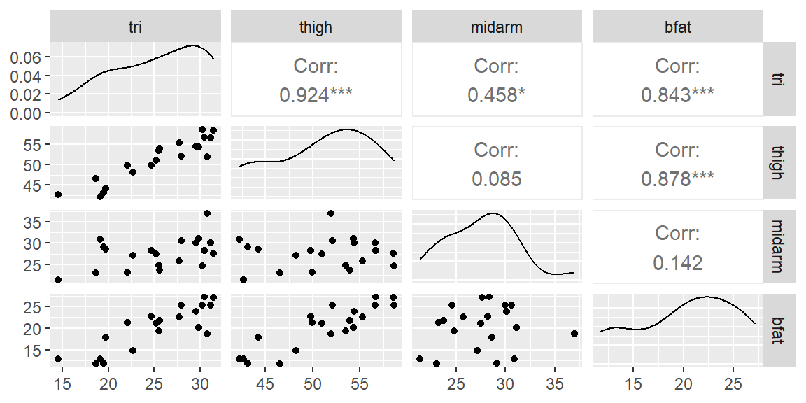
We see from this scatterplot matrix, that the predictor variables have some high correlation between them. Thus, we already see that there will be a problem with multicollinearity.
# Prepare data
dat_recipe <- recipe(
bfat ~ tri + thigh + midarm,
data = dat
)
# Set up model
lm_model <- linear_reg() |>
set_engine("lm")
# Set up the workflow
lm_workflow <- workflow() |>
add_recipe(dat_recipe) |>
add_model(lm_model)
# Fit the model
lm_fit <- lm_workflow |>
fit(data = dat)
fit_full <- lm_fit |> extract_fit_engine()
vif_full <- fit_full |> vif()
knitr::kable(
tibble(variable = names(vif_full), VIF = as.numeric(vif_full)),
digits = 3
)| variable | VIF |
|---|---|
| tri | 708.843 |
| thigh | 564.343 |
| midarm | 104.606 |
From VIFs, we see that there is clear multicollinearity between all three variables.
The highest VIF is tri. From the scatterplot matrix above, we see tri is most correlated with thigh. Let’s remove tri and see what happens.
lm_workflow_no_tri <- lm_workflow |>
update_recipe(
dat_recipe |> step_rm(tri)
)
# Fit the model
lm_fit_no_tri <- lm_workflow_no_tri |>
fit(data = dat)
fit_no_tri <- lm_fit_no_tri |> extract_fit_engine()
vif_no_tri <- fit_no_tri |> vif()
knitr::kable(
tibble(variable = names(vif_no_tri), VIF = as.numeric(vif_no_tri)),
digits = 3
)| variable | VIF |
|---|---|
| thigh | 1.007 |
| midarm | 1.007 |
We see that once tri is removed, the remaining variables have small VIFs.
We are not suggesting that tri should definitely be removed. It may still be the best predictor of bfat. There are other ways to determine if only having tri is preferred over a model with just the other two variables. We will discuss those methods later. For now, we do see that multicollinearity will be an issue for these three variables.
To see the effect on the estimated coefficients, let’s look at the standard errors for the model with all three variables and the model without tri.
| model | term | estimate | std.error | statistic | p.value |
|---|---|---|---|---|---|
| Full model | (Intercept) | 117.0847 | 99.7824 | 1.1734 | 0.2578 |
| Full model | tri | 4.3341 | 3.0155 | 1.4373 | 0.1699 |
| Full model | thigh | -2.8568 | 2.5820 | -1.1064 | 0.2849 |
| Full model | midarm | -2.1861 | 1.5955 | -1.3701 | 0.1896 |
| Without tri | (Intercept) | -25.9970 | 6.9973 | -3.7153 | 0.0017 |
| Without tri | thigh | 0.8509 | 0.1124 | 7.5669 | 0.0000 |
| Without tri | midarm | 0.0960 | 0.1614 | 0.5950 | 0.5597 |
Note how much larger the standard errors are for the full model (with multicollinearity) than the model without tri (no multicollinearity).
Larger standard errors will lead to smaller \(t\) statistics and thus larger p-values. So multicollinearity will make variables look like they are insignificant but they really are significant.
Let’s now look at the RMSE (sigma in the glance() function output) which is used in the confidence interval of the mean response and prediction interval formulas.
| model | r.squared | adj.r.squared | sigma | statistic | p.value |
|---|---|---|---|---|---|
| Full model | 0.8014 | 0.7641 | 2.4800 | 21.5157 | 0 |
| Without tri | 0.7757 | 0.7493 | 2.5565 | 29.3978 | 0 |
Note that RMSE is not much different between the two models. It is not affected by multicollinearity. So if all we want to use our model for are estimation of the mean and predictions, then multicollinearity is not an issue. If, however, we want to also determine which variables are important in the estimation and prediction, then multicollinearity is an issue.
14.2 Standardizing predictor variables
Predictors in a regression model are often measured in very different units. One might be a skinfold thickness in millimeters and another a percentage, and their magnitudes can differ by orders of magnitude. Rescaling them to a common scale makes coefficient estimates more stable numerically and makes some methods, PCA among them, behave sensibly.
The most common rescaling is standardization: each predictor is shifted and rescaled so that it has mean 0 and standard deviation 1. In this section we compare standardization with normalization and look at what standardizing does (and does not do) when predictors are correlated.
14.2.1 Standardization vs. normalization
People sometimes use “standardization” and “normalization” as if they meant the same thing, but they are different operations. Standardization transforms a variable \(X\) with
\[ z_i = \frac{x_i - \bar{x}}{s_x} \]
where \(z_i\) is the standardized value, \(x_i\) is the original value, \(\bar{x}\) is the sample mean, and \(s_x\) is the sample standard deviation. The transformed variable has mean 0 and standard deviation 1. It does not follow a normal distribution unless the original variable did; standardizing changes the location and scale, not the shape.
Normalization usually means rescaling a variable to a fixed range, often \([0, 1]\):
\[ x' = \frac{x_i - \text{min}(x)}{\text{max}(x) - \text{min}(x)} \]
Normalization is used when an algorithm needs its inputs in a bounded range, as many neural networks do. In linear models we usually standardize instead, since centering and scaling by the standard deviation gives coefficients a “per standard deviation” interpretation.
14.2.2 Why tidymodels uses the term “normalize”
In tidymodels, the recipe step that standardizes is called step_normalize(). It computes the mean and standard deviation of each predictor and then subtracts the mean and divides by the standard deviation, which is standardization in the sense above. The name follows a convention in some software, where both operations are loosely called normalization. In this book, when you see step_normalize(), read it as “standardize.”
14.2.3 Standardization and multicollinearity
Putting every predictor on the same scale removes large differences in magnitude between variables, and this helps numerically, particularly for methods other than least squares. Standardizing does not change the correlations among the predictors, though, so it does nothing to the multicollinearity itself. When multicollinearity is severe, we need a method that changes the predictors, such as principal component regression.
ExampleWorked example: Standardizing does not remove correlation
Standardization changes the scale of the predictors. The correlations between them stay the same.
bodyfat_predictors <- dat |>
select(tri, thigh, midarm)
bodyfat_standardized <- bodyfat_predictors |>
mutate(across(everything(), ~ as.numeric(scale(.x))))
correlation_compare <- tibble(
pair = c("tri and thigh", "tri and midarm", "thigh and midarm"),
original_correlation = c(
cor(bodyfat_predictors$tri, bodyfat_predictors$thigh),
cor(bodyfat_predictors$tri, bodyfat_predictors$midarm),
cor(bodyfat_predictors$thigh, bodyfat_predictors$midarm)
),
standardized_correlation = c(
cor(bodyfat_standardized$tri, bodyfat_standardized$thigh),
cor(bodyfat_standardized$tri, bodyfat_standardized$midarm),
cor(bodyfat_standardized$thigh, bodyfat_standardized$midarm)
)
)
knitr::kable(correlation_compare, digits = 4)| pair | original_correlation | standardized_correlation |
|---|---|---|
| tri and thigh | 0.9238 | 0.9238 |
| tri and midarm | 0.4578 | 0.4578 |
| thigh and midarm | 0.0847 | 0.0847 |
The correlations are identical before and after standardizing. Standardization helps with scale and numerical stability, but it does not cure multicollinearity.
14.3 Principal component regression
One way to deal with multicollinearity is principal component regression (PCR), which combines principal component analysis (PCA) with linear regression. PCR replaces the original predictors with a new set of uncorrelated variables, called principal components (PCs), and then uses some or all of those components as the predictors in the regression.
14.3.1 Introduction to principal component analysis (PCA)
PCA looks for the directions in the predictor space along which the data vary the most. The first principal component is the direction with the largest variance. The second is the direction with the largest remaining variance among all directions perpendicular to the first, and so on. Each principal component is a linear combination of the original predictors, and the components are uncorrelated with one another.
Because the last few components often carry very little of the variation, PCA can also reduce the number of variables we work with. This is most useful when there are many predictors and several of them are highly correlated.
ImportantPCA does not know about the response variable
PCA uses only the predictor variables. It finds directions that explain variation in the predictors, and those are not necessarily the directions that predict the response well.
So the first few principal components can explain most of the variation in the predictors and still not be the most useful components for predicting \(y\). Choose the number of components with model performance, subject-matter judgment, or a validation procedure, not with predictor variance alone.
TipFor those who want to see the math
Principal components are linear transformations of the original predictors chosen to capture as much variance as possible. They are computed in five steps.
- Standardize the data. Given \(p\) predictors \(x_1, x_2, \dots, x_p\) measured on \(n\) observations, standardize each predictor to have mean 0 and standard deviation 1:
\[ z_{ij} = \frac{x_{ij} - \bar{x}_j}{s_j} \]
where \(z_{ij}\) is the standardized value of the \(j\)th predictor for the \(i\)th observation, \(\bar{x}_j\) is the mean of the \(j\)th predictor, and \(s_j\) is its standard deviation. Without this step, the predictor with the largest units would dominate the first component.
- Compute the covariance matrix. For the standardized predictors, the covariance matrix is
\[ \mathbf{S} = \frac{1}{n-1} \mathbf{Z}^T \mathbf{Z} \]
where \(\mathbf{Z}\) is the \(n \times p\) matrix of standardized data. Since the columns are standardized, \(\mathbf{S}\) is also the correlation matrix of the original predictors.
- Find the eigenvalues and eigenvectors. Solve the eigenvalue problem
\[ \mathbf{S} \mathbf{v}_j = \lambda_j \mathbf{v}_j \]
where \(\lambda_j\) is the \(j\)th eigenvalue and \(\mathbf{v}_j\) is its eigenvector, also called the loading vector. The eigenvalue \(\lambda_j\) is the variance of the \(j\)th principal component, and the eigenvector gives the direction of the \(j\)th new axis.
- Construct the principal components. The \(j\)th principal component is a linear combination of the standardized predictors:
\[ PC_j = v_{j1} z_1 + v_{j2} z_2 + \cdots + v_{jp} z_p \]
where \(v_{jk}\) is the \(k\)th element of \(\mathbf{v}_j\). The first component, PC1, has the largest possible variance. PC2 has the largest remaining variance subject to being uncorrelated with PC1, and the pattern continues through all \(p\) components.
- Compute the explained variance. The proportion of the total variance explained by the \(j\)th component is
\[ \text{Explained Variance of } PC_j = \frac{\lambda_j}{\sum_{k=1}^p \lambda_k} \]
and the cumulative proportion explained by the first \(m\) components is
\[ \text{Cumulative Explained Variance} = \frac{\sum_{j=1}^m \lambda_j}{\sum_{k=1}^p \lambda_k}. \]
14.3.2 A picture of what principal components do
With two predictors we can draw the whole process. The example below uses only tri and thigh from the bodyfat data, since these two have the strongest correlation.
ExampleWorked example: Principal components as a rotation of the axes
We first find the two principal components of the standardized tri and thigh values.
two_pc_recipe <- recipe(bfat ~ tri + thigh, data = dat) |>
step_normalize(all_predictors()) |>
step_pca(all_predictors(), num_comp = 2)
two_pc_prep <- two_pc_recipe |> prep()
# Loadings: each row of this table is one direction (one PC)
two_pc_loadings <- two_pc_prep |>
tidy(number = 2, type = "coef") |>
select(component, terms, value) |>
pivot_wider(names_from = terms, values_from = value)
two_pc_loadings |>
knitr::kable(digits = 4)| component | tri | thigh |
|---|---|---|
| PC1 | 0.7071 | 0.7071 |
| PC2 | -0.7071 | 0.7071 |
| component | percent_variance |
|---|---|
| 1 | 96.19 |
| 2 | 3.81 |
The loadings for PC1 put equal weight on tri and thigh, so PC1 is (up to sign) the average of the two standardized measurements. PC2 is their difference. Because the two variables are so strongly correlated, PC1 accounts for about 96% of their combined variance and PC2 for only about 4%.
The plot below shows the standardized data with the two principal component directions drawn through the center. The gray segments connect each observation to its projection onto the PC1 line. A point’s PC1 score is its position along that line, and the length of its gray segment is the size of its PC2 score.
two_pc_scores <- two_pc_prep |>
bake(new_data = dat)
pc1_dir <- two_pc_loadings |> filter(component == "PC1")
pc2_dir <- two_pc_loadings |> filter(component == "PC2")
projection_data <- dat |>
transmute(
tri = as.numeric(scale(tri)),
thigh = as.numeric(scale(thigh))
) |>
bind_cols(two_pc_scores |> select(PC1, PC2)) |>
mutate(
proj_tri = PC1 * pc1_dir$tri,
proj_thigh = PC1 * pc1_dir$thigh
)
ggplot(projection_data, aes(x = tri, y = thigh)) +
geom_abline(
slope = pc1_dir$thigh / pc1_dir$tri, intercept = 0,
color = "steelblue", linewidth = 1
) +
geom_abline(
slope = pc2_dir$thigh / pc2_dir$tri, intercept = 0,
color = "darkorange", linewidth = 1, linetype = "dashed"
) +
geom_segment(
aes(xend = proj_tri, yend = proj_thigh),
color = "gray60"
) +
geom_point(size = 2) +
annotate("text", x = 1.9, y = 2.3, label = "PC1",
color = "steelblue", fontface = "bold") +
annotate("text", x = -1.9, y = 2.3, label = "PC2",
color = "darkorange", fontface = "bold") +
coord_equal(xlim = c(-2.5, 2.5), ylim = c(-2.5, 2.5)) +
labs(
title = "Principal component directions for tri and thigh",
x = "Standardized tri",
y = "Standardized thigh"
)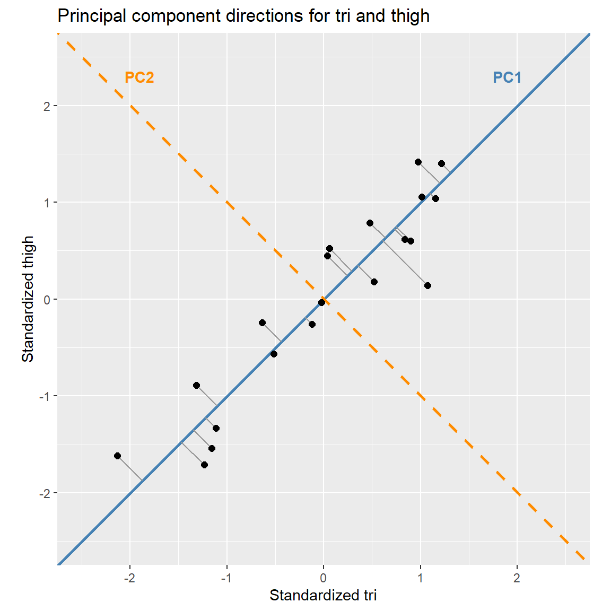
Most of the spread in the cloud of points runs along the PC1 line. The gray segments are short, and they are the only information PC2 carries.
PCA does not move the points. It rotates the axes so that the first axis lies along the direction of greatest spread. If we plot the same 20 people using their PC scores as coordinates, the cloud is turned so that PC1 runs horizontally, and the correlation between the two new variables is 0.
r_original <- cor(projection_data$tri, projection_data$thigh)
r_rotated <- cor(projection_data$PC1, projection_data$PC2)
rotation_data <- bind_rows(
projection_data |>
transmute(
panel = str_glue("Original axes: tri and thigh (r = {round(r_original, 2)})"),
horizontal = tri, vertical = thigh
),
projection_data |>
transmute(
panel = str_glue("Rotated axes: PC1 and PC2 (r = {round(r_rotated, 2)})"),
horizontal = PC1, vertical = PC2
)
) |>
mutate(panel = fct_inorder(panel))
ggplot(rotation_data, aes(x = horizontal, y = vertical)) +
geom_hline(yintercept = 0, color = "gray70") +
geom_vline(xintercept = 0, color = "gray70") +
geom_point(size = 2) +
facet_wrap(~ panel) +
coord_equal() +
labs(
x = "First axis (standardized tri, or PC1)",
y = "Second axis (standardized thigh, or PC2)"
)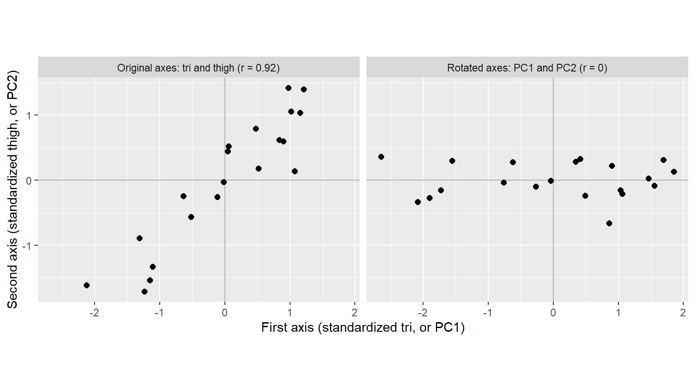
The right panel shows why PCR removes multicollinearity. The new axes are uncorrelated by construction, and almost all of the variation is in the horizontal direction. If we dropped PC2 we would keep about 96% of the variation in the two predictors with a single variable.
With three or more predictors the idea is the same, although we can no longer draw it: PCA rotates the axes of the \(p\)-dimensional predictor space so that PC1 points along the longest direction of the cloud, PC2 along the longest direction perpendicular to PC1, and so on.
The loadings are the recipe for each component. A person’s PC score is a weighted sum of their standardized measurements, and the loadings are the weights. For tri and thigh, PC1 is \(0.71\,z_{tri} + 0.71\,z_{thigh}\) and PC2 is \(-0.71\,z_{tri} + 0.71\,z_{thigh}\). Someone who is one standard deviation above average on both measurements has a PC1 score of about 1.41 and a PC2 score of 0. Someone who is one standard deviation above average on thigh but exactly average on tri has scores of about 0.71 on both. So PC1 measures overall size: how much skinfold a person has at the triceps and thigh combined. PC2 measures shape: whether a person carries relatively more at the thigh than at the triceps. Since the two measurements rise and fall together for almost everyone, people differ mostly in size, and PC2 has very little variance. Three things help when reading any table of loadings. A loading near 0 means that variable plays almost no part in the component. Variables whose loadings have the same sign move the score in the same direction. And the sign of a whole component is arbitrary, since flipping every loading in a component gives the same axis pointing the other way; only the signs relative to each other mean anything.
In regression, instead of regressing the response on the original predictors, we use the principal components as the predictors. Using only the first few components keeps most of the variation in the predictors while removing the multicollinearity.
Example 14.3
ExamplePrincipal component regression with the bodyfat data
We return to the bodyfat data, now with all three predictors. The code below applies PCA to the predictors and then uses the principal components in a regression model.
pca_recipe <- recipe(bfat ~ ., data = dat) |>
step_normalize(all_predictors()) |>
step_pca(all_predictors(), num_comp = 3)
# Determine the parameters for the recipe steps.
# In this case, we need the mean and standard deviation of each variable
# along with the principal component loadings.
prepped <- pca_recipe |> prep()
# Apply the steps to the data.
pca_data <- prepped |> bake(dat)
# Print the first few principal component rows.
pca_data |>
head() |>
knitr::kable(digits = 4)| bfat | PC1 | PC2 | PC3 |
|---|---|---|---|
| 11.9 | -1.6319 | 1.1008 | 0.0463 |
| 22.8 | -0.1930 | 0.2639 | 0.0375 |
| 18.7 | 1.7293 | 2.1900 | -0.0245 |
| 20.1 | 1.3302 | 0.5470 | -0.0026 |
| 12.9 | -1.6236 | 1.6229 | -0.0363 |
| 21.7 | -0.0051 | -1.1961 | 0.0033 |
Each column PC1, PC2, and PC3 is a linear combination of the standardized tri, thigh, and midarm values. The loadings tell us which combination each component is.
prepped |>
tidy(number = 2, type = "coef") |>
ggplot(aes(x = value, y = terms)) +
geom_col() +
geom_vline(xintercept = 0, color = "gray50") +
facet_wrap(~ component) +
labs(
title = "Loadings for the bodyfat principal components",
x = "Loading",
y = NULL
)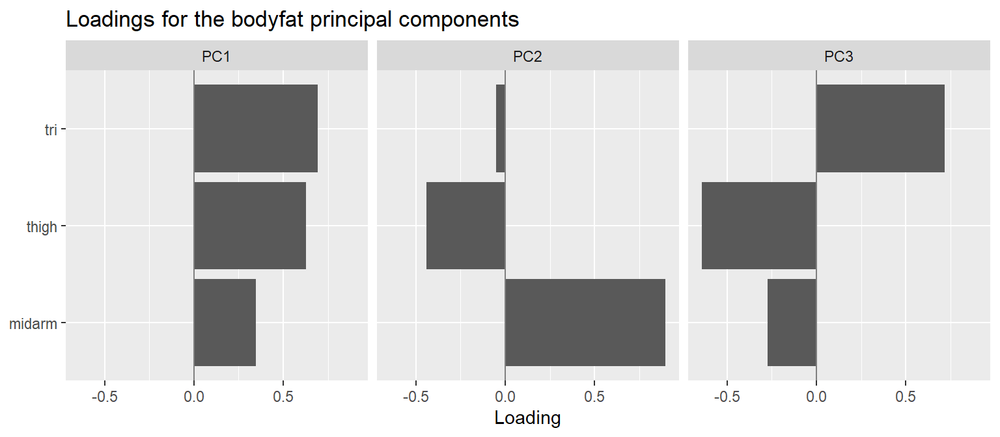
Next we look at how much of the variance each component explains.
# Extract the PCA results
pca_results <- prepped |> tidy(number = 2, type = "variance")
pca_results |>
knitr::kable(digits = 4)| terms | value | component | id |
|---|---|---|---|
| variance | 2.0665 | 1 | pca_sLtu3 |
| variance | 0.9328 | 2 | pca_sLtu3 |
| variance | 0.0007 | 3 | pca_sLtu3 |
| cumulative variance | 2.0665 | 1 | pca_sLtu3 |
| cumulative variance | 2.9993 | 2 | pca_sLtu3 |
| cumulative variance | 3.0000 | 3 | pca_sLtu3 |
| percent variance | 68.8824 | 1 | pca_sLtu3 |
| percent variance | 31.0934 | 2 | pca_sLtu3 |
| percent variance | 0.0242 | 3 | pca_sLtu3 |
| cumulative percent variance | 68.8824 | 1 | pca_sLtu3 |
| cumulative percent variance | 99.9758 | 2 | pca_sLtu3 |
| cumulative percent variance | 100.0000 | 3 | pca_sLtu3 |
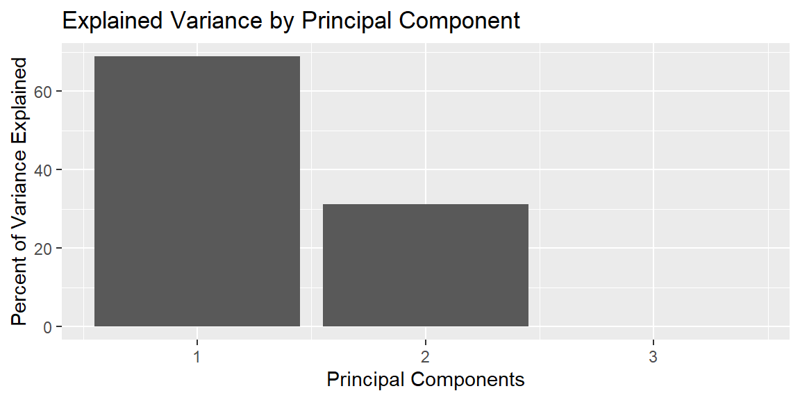
The bars show the percent of the predictor variance explained by each component. The first component always explains the most, the second the next most, and so on. We can use the cumulative percent to decide how many components to keep in the regression model.
The scatterplot matrix of the PCA data shows that the correlations between the PCs are zero.
ggpairs(pca_data)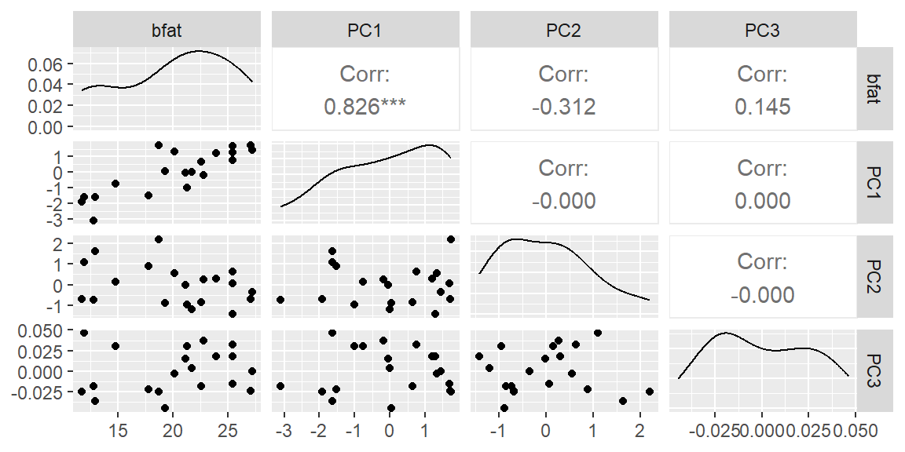
Principal component regression uses these PCs as the predictor variables. The third PC explains very little of the variability, so we use only the first two and save a degree of freedom, since the model has one fewer coefficient.
pcr_recipe <- recipe(bfat ~ ., data = dat) |>
step_normalize(all_predictors()) |>
step_pca(all_predictors(), num_comp = 2)
lm_model <- linear_reg() |>
set_engine("lm")
pcr_workflow <- workflow() |>
add_recipe(pcr_recipe) |>
add_model(lm_model)
pcr_fit <- pcr_workflow |>
fit(data = dat)
pcr_fit |>
tidy() |>
knitr::kable(digits = 4)| term | estimate | std.error | statistic | p.value |
|---|---|---|---|---|
| (Intercept) | 20.1950 | 0.5656 | 35.7071 | 0.0000 |
| PC1 | 2.9358 | 0.4037 | 7.2729 | 0.0000 |
| PC2 | -1.6498 | 0.6008 | -2.7459 | 0.0138 |
The standard errors are now small, because the predictors in this model are uncorrelated. We can confirm that there is no multicollinearity by looking at the VIFs.
| variable | VIF |
|---|---|
| PC1 | 1 |
| PC2 | 1 |
Both VIFs are exactly 1, so there is no multicollinearity.
Example 14.4
ExamplePCA and principal component regression with the UN98 data
The bodyfat data have only three predictors. The UN98 data from Example 14.1 have ten, and several of them had large VIFs, so they give a fuller picture of PCA and PCR. As before, we leave out region and GDPperCapita as predictors. We keep region and the country names as identifiers so we can label the plots.
Many countries are missing at least one variable. The model in Example 14.1 dropped those countries automatically; here we drop them before the PCA so that every step uses the same 39 countries.
un_dat <- UN98 |>
rownames_to_column("country") |>
select(-GDPperCapita) |>
drop_na()
nrow(un_dat)[1] 39un_pca_recipe <- recipe(infantMortality ~ ., data = un_dat) |>
update_role(country, region, new_role = "id") |>
step_normalize(all_predictors()) |>
step_pca(all_predictors(), num_comp = 10)
un_pca_prep <- un_pca_recipe |> prep()
un_variance <- un_pca_prep |>
tidy(number = 2, type = "variance") |>
filter(terms %in% c("percent variance", "cumulative percent variance")) |>
select(component, terms, value) |>
pivot_wider(names_from = terms, values_from = value)
un_variance |>
knitr::kable(digits = 2)| component | percent variance | cumulative percent variance |
|---|---|---|
| 1 | 64.74 | 64.74 |
| 2 | 11.03 | 75.77 |
| 3 | 10.41 | 86.18 |
| 4 | 5.32 | 91.50 |
| 5 | 4.61 | 96.11 |
| 6 | 2.26 | 98.37 |
| 7 | 0.91 | 99.28 |
| 8 | 0.48 | 99.76 |
| 9 | 0.16 | 99.92 |
| 10 | 0.08 | 100.00 |
Giving country and region the role "id" keeps them in the data but out of the PCA. With ten predictors there are ten components. The first explains about 65% of the variation in the predictors, and the first four together explain over 90%.
un_variance |>
ggplot(aes(x = component)) +
geom_col(aes(y = `percent variance`), fill = "gray60") +
geom_line(aes(y = `cumulative percent variance`), color = "steelblue") +
geom_point(aes(y = `cumulative percent variance`), color = "steelblue") +
scale_x_continuous(breaks = 1:10) +
labs(
title = "Variance explained by the UN98 principal components",
subtitle = "Bars: each component. Line: cumulative.",
x = "Principal component",
y = "Percent of predictor variance"
)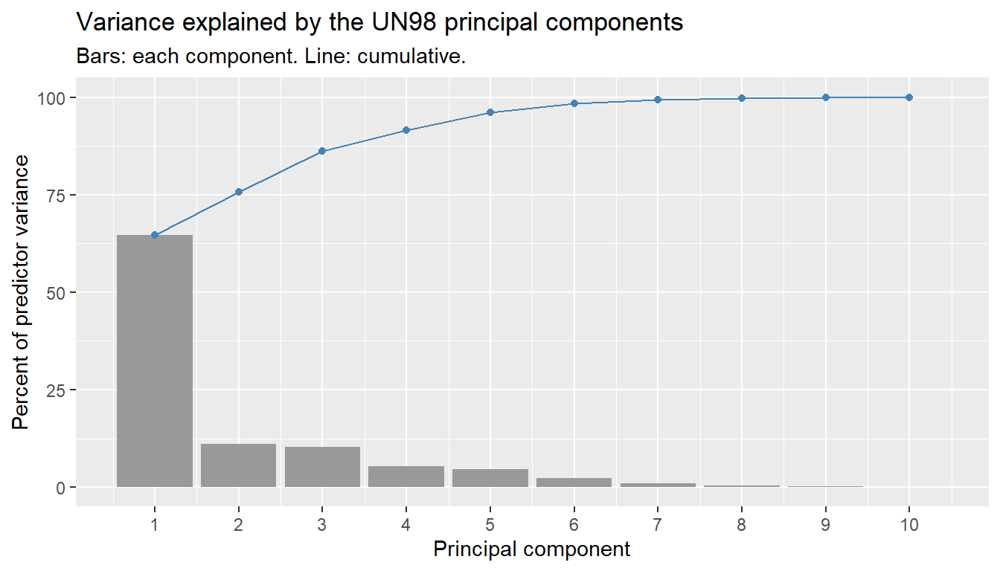
To interpret the components, we look at the loadings for the first three.
un_pca_prep |>
tidy(number = 2, type = "coef") |>
filter(component %in% c("PC1", "PC2", "PC3")) |>
ggplot(aes(x = value, y = terms)) +
geom_col() +
geom_vline(xintercept = 0, color = "gray50") +
facet_wrap(~ component) +
labs(
title = "Loadings for the first three UN98 principal components",
x = "Loading",
y = NULL
)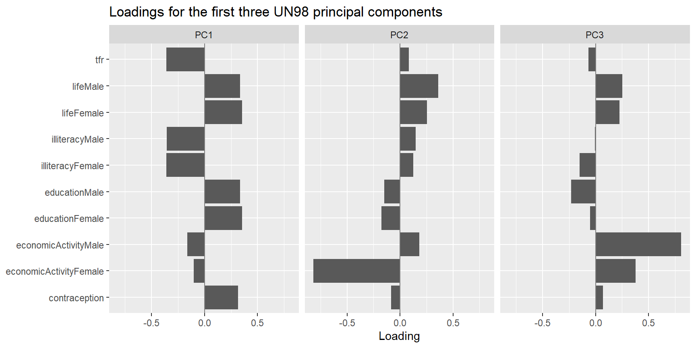
We read these loadings the same way as the ones for tri and thigh. PC1 has loadings between about 0.32 and 0.36 for both life expectancies, both education variables, and contraception use, and loadings of about -0.36 for fertility (tfr) and both illiteracy rates. A country with a high PC1 score has long life expectancy, more schooling, more contraception use, fewer births per woman, and low illiteracy, all at once. In other words, PC1 is a development scale, and one number summarizes eight correlated measurements. This shared direction is also why these variables had such large VIFs in Example 14.1: much of what each of them measures is the same thing.
The two economic activity variables have loadings of only -0.16 and -0.10 on PC1, so they contribute little to it. They were not strongly related to the other variables, and each gets a component mostly of its own: PC2 is dominated by economicActivityFemale, and PC3 by economicActivityMale. When we regress infant mortality on these components, the PC1 coefficient describes how infant mortality changes as a country moves along the development scale. It does not tell us the effect of education separately from life expectancy, which is exactly the question the large VIFs told us these data could not answer.
Plotting the countries by their first two PC scores shows the development axis. (The sign of a principal component is arbitrary, so in your output the plot may be flipped left to right.)
# With ten components, bake() names the scores PC01, ..., PC10.
# Remove the leading 0 so the names match the loadings (PC1, ..., PC10).
un_scores <- un_pca_prep |>
bake(new_data = NULL) |>
rename_with(~ str_replace(.x, "^PC0", "PC"))
un_scores |>
ggplot(aes(x = PC1, y = PC2, color = region)) +
geom_hline(yintercept = 0, color = "gray80") +
geom_vline(xintercept = 0, color = "gray80") +
geom_point(size = 2) +
geom_text(aes(label = country), size = 2.5, vjust = -0.8,
check_overlap = TRUE, show.legend = FALSE) +
labs(
title = "UN98 countries on the first two principal components",
x = "PC1 (development)",
y = "PC2 (mostly female economic activity)",
color = "Region"
)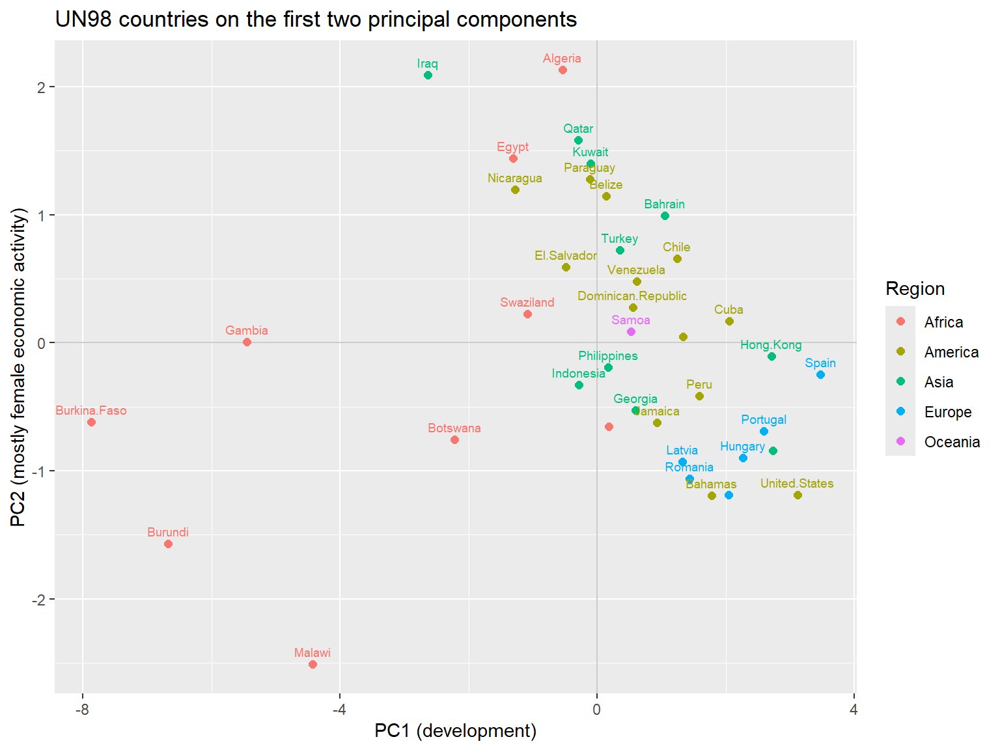
One end of PC1 is made up mostly of African countries, such as Burkina Faso and Burundi. The other end has Spain, the United States, South Korea, Hong Kong, and several other European countries. Infant mortality follows the same ordering, as the next plot shows.
un_scores |>
ggplot(aes(x = PC1, y = infantMortality)) +
geom_point(aes(color = region), size = 2) +
geom_smooth(method = "lm", se = FALSE, color = "black") +
labs(
x = "PC1 (development)",
y = "Infant mortality (per 1000 live births)",
color = "Region"
)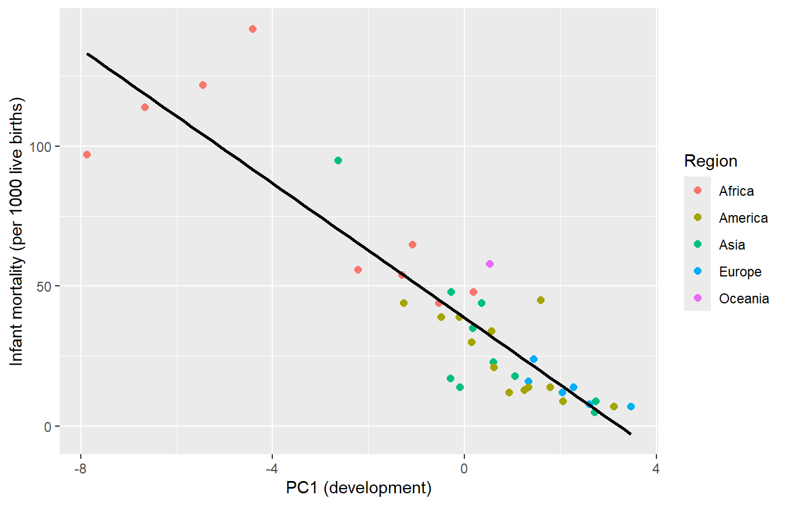
Now for the regression. We fit a PCR model for each possible number of components, from 1 to 10, and compare the fits. With all ten components, PCR is the same model as the ordinary least squares fit on the original ten predictors, since the ten components carry exactly the same information.
fit_pcr <- function(k) {
recipe(infantMortality ~ ., data = un_dat) |>
update_role(country, region, new_role = "id") |>
step_normalize(all_predictors()) |>
step_pca(all_predictors(), num_comp = k) |>
workflow(lm_model) |>
fit(data = un_dat)
}
pcr_comparison <- tibble(num_comp = 1:10) |>
mutate(
fit = map(num_comp, fit_pcr),
fit_stats = map(fit, ~ glance(extract_fit_engine(.x)))
) |>
unnest(fit_stats) |>
select(num_comp, r.squared, adj.r.squared, sigma, AIC)
pcr_comparison |>
knitr::kable(digits = 3)| num_comp | r.squared | adj.r.squared | sigma | AIC |
|---|---|---|---|---|
| 1 | 0.797 | 0.792 | 15.608 | 328.950 |
| 2 | 0.811 | 0.800 | 15.281 | 328.233 |
| 3 | 0.880 | 0.869 | 12.360 | 312.585 |
| 4 | 0.906 | 0.895 | 11.090 | 304.997 |
| 5 | 0.906 | 0.892 | 11.257 | 306.996 |
| 6 | 0.913 | 0.897 | 10.975 | 305.822 |
| 7 | 0.921 | 0.903 | 10.656 | 304.281 |
| 8 | 0.942 | 0.927 | 9.244 | 293.913 |
| 9 | 0.944 | 0.927 | 9.233 | 294.503 |
| 10 | 0.944 | 0.924 | 9.396 | 296.498 |
pcr_comparison |>
ggplot(aes(x = num_comp, y = adj.r.squared)) +
geom_line() +
geom_point() +
scale_x_continuous(breaks = 1:10) +
labs(
x = "Number of principal components",
y = "Adjusted R-squared"
)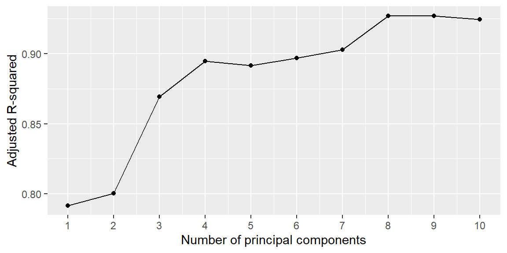
PC1 alone gives an adjusted \(R^2\) of about 0.79. Adding components 3 and 4 helps, and then the fit hardly changes until the eighth component, which raises the adjusted \(R^2\) again. PC8 explains less than half of 1% of the variation in the predictors, yet it is useful for predicting infant mortality. This is the warning from earlier in action: PCA ranks components by how much predictor variance they carry, without looking at \(y\). The comparison above uses the same data to fit and to judge the models; a better way to choose the number of components is cross-validation, which we cover in the chapter on model validation.
For this example we keep four components. They explain over 90% of the predictor variance, and the adjusted \(R^2\) is close to that of the full model.
un_pcr_fit <- fit_pcr(4)
un_pcr_fit |>
tidy() |>
knitr::kable(digits = 4)| term | estimate | std.error | statistic | p.value |
|---|---|---|---|---|
| (Intercept) | 38.7179 | 1.7758 | 21.8031 | 0.0000 |
| PC1 | -11.9976 | 0.7071 | -16.9684 | 0.0000 |
| PC2 | -3.8037 | 1.7127 | -2.2208 | 0.0331 |
| PC3 | -8.7957 | 1.7634 | -4.9879 | 0.0000 |
| PC4 | -7.5918 | 2.4662 | -3.0783 | 0.0041 |
| variable | VIF |
|---|---|
| PC1 | 1 |
| PC2 | 1 |
| PC3 | 1 |
| PC4 | 1 |
All four VIFs are 1, compared with VIFs well above 10 for several of the original predictors in Example 14.1. PC1 has a very small p-value, which fits the plot of infant mortality against PC1.
The PCR coefficients are for components, but we can translate them back to the standardized predictors. Each PC is a weighted sum of the standardized predictors, so the slope PCR implies for a predictor is the sum, over the four components, of its loading times the component’s coefficient. The table compares these implied slopes with the least squares slopes from a model on the standardized predictors.
pcr_gamma <- un_pcr_fit |>
tidy() |>
filter(term != "(Intercept)") |>
select(component = term, gamma = estimate)
pcr_implied <- un_pcr_fit |>
extract_recipe() |>
tidy(number = 2, type = "coef") |>
inner_join(pcr_gamma, by = "component") |>
group_by(term = terms) |>
summarize(pcr_slope = sum(value * gamma))
ols_standardized <- recipe(infantMortality ~ ., data = un_dat) |>
update_role(country, region, new_role = "id") |>
step_normalize(all_predictors()) |>
workflow(lm_model) |>
fit(data = un_dat) |>
tidy() |>
filter(term != "(Intercept)") |>
select(term, ols_slope = estimate, ols_std_error = std.error)
ols_standardized |>
left_join(pcr_implied, by = "term") |>
knitr::kable(digits = 3)| term | ols_slope | ols_std_error | pcr_slope |
|---|---|---|---|
| tfr | 17.964 | 5.768 | 7.757 |
| contraception | -1.439 | 2.782 | -5.343 |
| educationMale | 14.311 | 7.441 | 2.469 |
| educationFemale | -18.570 | 8.002 | 0.404 |
| lifeMale | -3.614 | 9.911 | -8.854 |
| lifeFemale | -7.572 | 13.175 | -8.934 |
| economicActivityMale | -3.176 | 2.187 | -2.629 |
| economicActivityFemale | 2.934 | 2.182 | -0.523 |
| illiteracyMale | -8.841 | 6.372 | 2.941 |
| illiteracyFemale | 7.712 | 7.522 | 4.939 |
Look at the pairs of variables that measure nearly the same thing. Least squares gives educationMale and educationFemale large slopes of opposite sign (about 14.3 and -18.6), and it does the same with illiteracyMale and illiteracyFemale; the two slopes in each pair mostly cancel. Several of the least squares standard errors are as large as the estimates, as the large VIFs predicted. PCR gives the two variables in each pair slopes with the same sign and similar size, because they load almost identically on the components it kept. The PCR slopes are biased, since we discarded six components, but they are much more stable. They still describe a change in one standardized predictor with the others held fixed, so they should be read with the same care as in Example 14.1.
PCR lets us fit a regression model even when the multicollinearity is extreme, and using only the first few PCs also reduces the dimension of the problem. It does not reduce the number of measurements we need. Every PC is a linear combination of all the original predictors, so we still have to collect every one of them. If the question is whether a variable that is hard or expensive to measure can be dropped, PCR will not answer it. We also lose the direct interpretation of the coefficients.
WarningPCR trades interpretation for stability
PCR reduces multicollinearity because the principal components are uncorrelated. The cost is that the coefficients are no longer slopes for the original predictors. The coefficient for PC1, for example, is the change in the expected response for a one-unit increase in the first principal component, not for a one-unit increase in tri, thigh, or midarm.
For this reason PCR is most appealing when prediction or numerical stability is the goal, rather than explaining the effect of each original predictor.
NoteBridge to ridge regression
PCR handles multicollinearity by changing the predictors: it replaces them with principal components, which reduces the dimension and removes the correlation, at the price of coefficients that describe components instead of the original variables. Ridge regression, discussed in Chapter 19, keeps the original predictors in the model and adds a penalty that shrinks their coefficient estimates toward 0. That often makes the estimates more stable and improves prediction when predictors are correlated, but the estimates are biased on purpose.
Both methods are useful when ordinary least squares becomes unstable. Neither one tells us which original variable is “the one true cause”; that question still requires study design, context, and careful interpretation.
14.4 Recap
In this chapter we looked at what happens when predictors overlap with each other and how principal component regression can deal with that overlap.
| Idea | Meaning |
|---|---|
| Multicollinearity | Two or more predictors contain redundant information because they are correlated with each other. |
| Partial slope interpretation | A regression coefficient describes the effect of changing one predictor while holding the others fixed. This is awkward when the predictors naturally move together. |
| VIF | The variance inflation factor measures how well one predictor can be explained by the other predictors. |
| Large VIF | The standard error for that coefficient is inflated because of multicollinearity. |
| Prediction vs. coefficient inference | Multicollinearity can leave predictions largely unchanged while making individual coefficient tests unstable. |
| Standardization | Rescaling a predictor to have mean 0 and standard deviation 1. It changes the scale but not the correlations among predictors. |
| PCA | A rotation of the predictor axes that replaces correlated predictors with uncorrelated principal components, ordered by how much predictor variance they explain. PCA ignores \(y\). |
| PCR | Regression on principal components. It can make the fit more stable, but the coefficients are harder to interpret. |
| Ridge regression | A regularization method that keeps the original predictors and shrinks their coefficients to make the fit more stable. |
14.5 Check your understanding
NoteProblems
Why can a model with severe multicollinearity still make useful predictions?
What does a high VIF tell us about a predictor’s relationship with the other predictors?
Explain why multicollinearity tends to increase p-values for individual coefficient tests.
Why is the phrase “holding all other predictors constant” especially important when discussing multicollinearity?
Does standardizing predictors remove multicollinearity? Explain.
In
tidymodels, why mightstep_normalize()be a confusing name in a regression course?Why does using principal components remove multicollinearity among the transformed predictors?
Why might PCR be a poor choice if the main research goal is to explain the unique effect of each original predictor?
Why might the first principal component not be the best single predictor of the response?
How does ridge regression respond to multicollinearity differently than PCR?
In Example 14.4, the eighth principal component explained less than 1% of the variation in the predictors but raised the adjusted \(R^2\) noticeably. How can that happen?
TipSolutions
Prediction uses the combined information in the predictors. If two predictors overlap, the model can still use their shared information to predict the response well. The difficulty is in separating the unique contribution of each predictor, not in prediction.
The predictor can be predicted from the other predictors. A high VIF means that when we regress this predictor on the remaining predictors, \(R_i^2\) is large. In plain language, the predictor carries information that is already in the model.
The test statistic for a coefficient is the estimate divided by its standard error. Multicollinearity inflates the standard error, so the test statistic shrinks and the p-value grows, even when the predictor is related to the response.
If two predictors usually move together, it may be hard to imagine increasing one while the other stays fixed. That makes the partial slope hard to interpret as a real-world effect.
No. Standardizing changes each predictor’s units so it has mean 0 and standard deviation 1, but the correlations stay the same. Multicollinearity is about the relationships among predictors, so standardizing alone does not remove it.
It performs standardization. In this chapter, standardization means subtracting the mean and dividing by the standard deviation, and
step_normalize()does exactly that, even though some courses use the word normalization only for rescaling values to a range such as 0 to 1.The components are constructed to be uncorrelated. PCA rotates the predictor axes to new axes that are perpendicular to one another, as in the rotation plot for
triandthigh. Since the components have no linear overlap, their VIFs are 1 when they are used together in a linear model.PCR changes the predictors. The coefficients describe principal components, not the original variables. Each component combines all of the original predictors, so statements like “holding
thighandmidarmfixed, a one-unit increase intri…” are much harder to make.PCA looks only at the predictors. The first principal component is the direction with the most variation among the predictors, but nothing guarantees that this is the direction most related to \(y\).
PCR replaces the predictors with uncorrelated principal components and regresses on those. Ridge regression keeps the original predictors and shrinks their coefficient estimates to make the model more stable when the predictors are correlated.
PCA orders the components by how much of the predictors’ variance they carry and never looks at the response. A component with very little spread in the predictors can still be the direction that infant mortality depends on, so leaving it out costs some fit even though it carries little predictor variance.